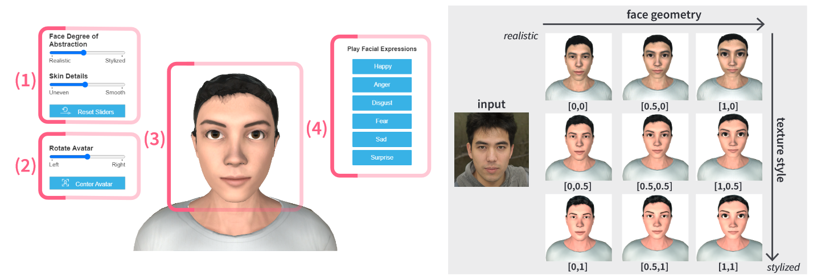

Work vs. Leisure – Differences in Avatar Characteristics Depending on Social Situations

Venue. VINCI (2023)
Abstract. User avatars are a critical component in collaborative Virtual Environments. A multitude of tools exist, employing various avatar types for self-representation and the representation of others. However, the optimal appearance for these avatars remains unclear. Consumer applications predominantly utilize stylized avatars, which are less prevalent in enterprise sectors. To investigate users’ avatar preferences, we conducted three user studies in both non-immersive and immersive environments, exploring whether social contexts influence virtual self-avatar selection. We generated individual avatars based on photographs of 91 participants, comprising 71 employees in the automotive industry and 20 individuals external to the company. Our findings indicate that work situations, irrespective of the occupational domain, significantly impact self-avatar choices. Conversely, we observed no correlation between the display medium or personality dimensions and avatar selection. Drawing upon our results, we provide recommendations for future avatar representation in work environments.
Link to this page: